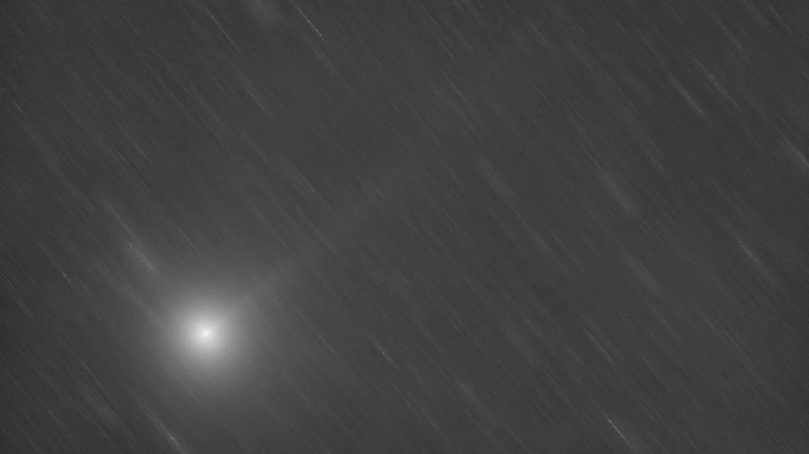

Posted 10h ago
A photograph of comet C/2023 H2 (Lemmon) taken on Oct. 8, 2023 by astronomer Gianluca Masi of the Virtual Telescope Project.
The comet discovered earlier this year will brighten the sky over Earth and may even be visible with the naked eye.
A relatively newly discovered comet is set to reach its brightest point over Earth during its 2023 appearance tonight.
The brightening of comet C/2023 H2 (Lemmon) will happen on Friday (Nov. 10) because this is when the icy traveler is set to reach its closest point to Earth — its perigee. At this time, it will be 17.6 million miles (28.3 million km) from our planet, which is about a fifth of the distance between Earth and the sun. Around the same time, comet C/2023 H2 (Lemmon) will be around 85 million miles (137 million km) from the sun.
According to In the Sky from New York City, comet C/2023 H2 (Lemmon) will become visible at around 5:49
p.m. EST (2249 GMT). At this time, the comet will be 50 degrees over the horizon to the west as the sky
darkens (the width of your fist at arm's length equals about ten degrees). After this, comet C/2023 H2
(Lemmon) will remain visible until around 10:29 p.m. EST (0339 GMT on Nov. 11), when it sinks to the
horizon.
During its Friday afternoon appearance in the sky, the comet will be in the Hercules constellation
shining at a magnitude of 5.5, fairly faint but possibly visible to the naked eye under the right
conditions. It will certainly be visible through binoculars, and most telescopes should be able to make
it out as a fuzzy point of light.
Comet C/2023 H2 (Lemmon) was first spotted on April 23, 2023, by the 1.5-meter reflector telescope of the Mount Lemmon Survey conducted from an observatory outside Tucson, Arizona, which is part of the wider Catalina Sky Survey. The comet is just one of an incredible 50,000 asteroids and comets discovered by the Mount Lemmon Survey, making it one of the most prolific minor planet-discovering surveys currently operating.
This has been a good period to observe comet C/2023 H2 (Lemmon). On Oct. 28, it reached perihelion, its closest point to the sun, coming to around 83 million miles from our star. On Oct. 31, the comet was visible edge-on from Earth with a stream of material observable project from the front of the comet C/2023 H2 (Lemmon). This was caused by radiation from the sun causing solid icy material to turn straight to gas — a process called sublimation — which is also responsible for giving comets their distinctive tails.